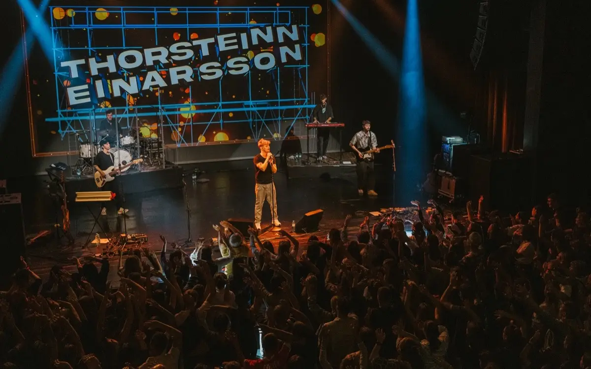
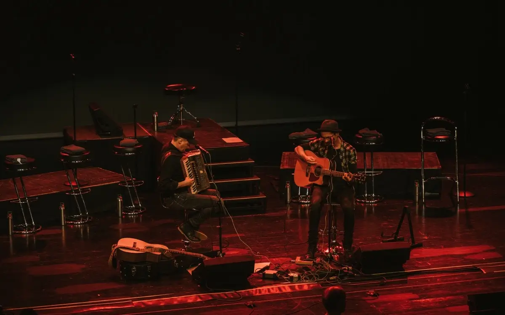
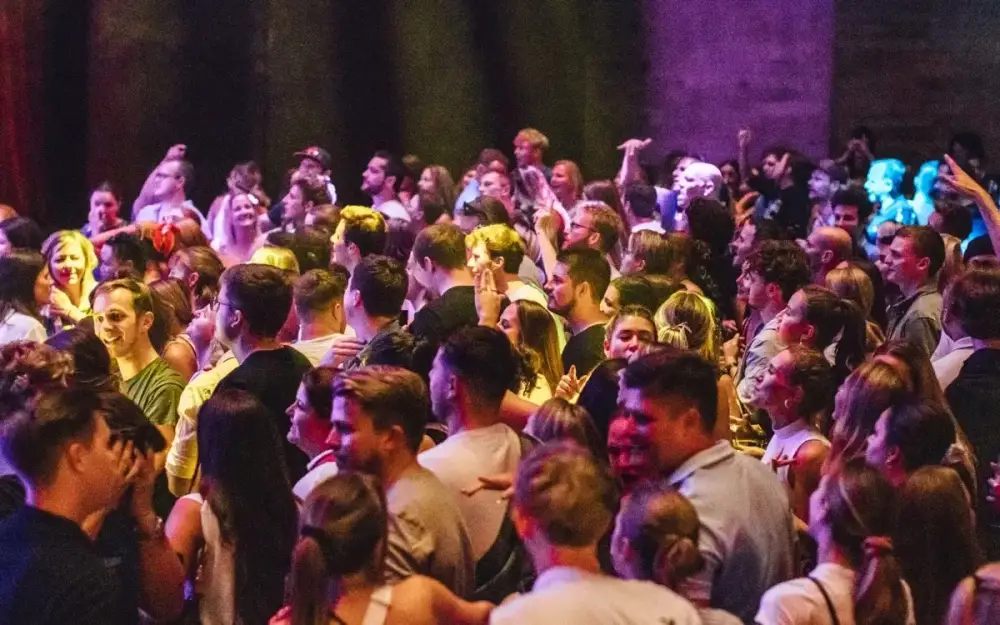

Genussroute 6850Donnerstag · Dornbirner Genussabend
Tickets ↗

Dornbirn · Vorarlberg
Wo Dornbirn
zämmahockt.
Restaurant und Livebühne in Dornbirn: mittags frisch gekocht, abends Konzert und Comedy. Bahnhofstraße 24.

Abends in Dornbirn · Programm
Euer Abend
steht schon.
Abends öffnen wir für Events: Dinner, Konzert oder Comedy. Datum wählen, Platz sichern, zämmahocka.
Helden reisen, Gäste speisen!Dienstag · Dinner & Bühne
Tickets ↗Helden reisen, Gäste speisen!Mittwoch · Zusatzabend
Tickets ↗Keinen Abend verpassenWir schicken neue Termine, sobald sie feststehen. Zuerst kommt eine Bestätigungsmail – erst mit dem Klick darin bist du angemeldet. Abmeldung jederzeit mit einem Klick. Wie wir mit deiner Adresse umgehen
So schaut ein Abend bei uns aus
Bilder statt Versprechen.




Tickets & Zahlung laufen direkt über den Veranstalter – nicht über die Wirtschaft. Der Ticketknopf führt euch immer zum offiziellen Anbieter.
Catering & Livebühne auf Achse
Emma & Eugen
kommen zu euch.
Catering für Firmenfest, Hochzeit oder Wunschort – mit dem Foodtruck direkt aus der Wirtschaft, in ganz Vorarlberg.

Mittag · 11:30–13:30
Frisch gekocht.
Jeden Mittag.
Wechselnde Mittagsmenüs im Restaurant an der Bahnhofstraße – saisonal und ohne Schnörkel.
Aktuelle Mittagskarte (PDF)Wann gibt es Mittagessen?
Montag bis Freitag von 11:30 bis 13:30 Uhr. An Wochenenden kochen wir mittags nicht; abends öffnet die Wirtschaft Dornbirn ausschließlich für Veranstaltungen.
Kann ich einen Tisch online reservieren?
Ja. Die Tischreservierung gilt für den Mittag und bestätigt sofort – ohne Konto und ohne Anruf. Für Abende gibt es keine Tischreservierung: Dort gilt das Ticket der jeweiligen Veranstaltung.
Gibt es die Mittagsgerichte zum Mitnehmen?
Ja, als Takeaway. Bestellt wird online, abholbereit ist das Essen in etwa 20 bis 30 Minuten. Die letzte Bestellung nehmen wir um 13:45 Uhr an, die letzte Abholung ist um 14:00 Uhr. Bezahlt wird bei der Abholung, bar oder mit Karte.
Wo ist die Wirtschaft Dornbirn?
Bahnhofstraße 24, 6850 Dornbirn in Vorarlberg, wenige Gehminuten vom Bahnhof. Telefonisch erreichbar unter +43 (0)5572 20 540.
Wochenkarte abonnierenJeden Montag um 7:15 Uhr im Postfach – nur wenn es eine neue Karte gibt. Wir schicken zuerst eine Bestätigungsmail, Abmeldung jederzeit mit einem Klick. Wie wir mit deiner Adresse umgehen
Gutscheine
Freude verschenken.
Ein Abend in der Wirtschaft, verpackt in einen Gutschein. Einlösbar für Konzert, Comedy oder ein Essen bei uns in Dornbirn.
- 01Gutschein wählen
- 02Daten angeben
- 03Bezahlen
- 04Drucken oder verschicken
- 05Freude verschenken
„Dinner & Konzert/Comedy“Veranstaltung nach Wahl · Wert: 68 Euro
Einlösbar für jede Veranstaltung im Wert von 68 Euro, inklusive einem erlesenen 6-Gänge-„Flying-Dinner“-Menü. Die beschenkte Person wählt Termin und Künstler selbst. Bei einzelnen Terminen kann ein kleiner Aufpreis anfallen.
„Konzert/Comedy only“Veranstaltung nach Wahl · Wert: 28 Euro
Einlösbar für jede Veranstaltung im Wert von 28 Euro. Die beschenkte Person wählt Termin und Künstler selbst. Bei einzelnen Terminen kann ein kleiner Aufpreis anfallen.
WertgutscheinBetrag frei wählbar
Wird mit einem frei gewählten Wert ausgestellt. Ob ein feines Abendessen in der „wirtschaft“ oder ein Konzert- und Comedybesuch: einlösbar für alles, was man bei uns bekommen kann.
Zum Gutschein-Shop ↗
Die Bestellung läuft persönlich über uns. Wir melden uns mit den Zahlungsdaten und schicken den Gutschein zum Drucken oder per Post.
@wirtschaft_dornbirn
Zuletzt bei uns.


Die Bilder liegen auf unserem Server – beim Ansehen fließt nichts an Instagram. Erst der Klick führt zum Profil.